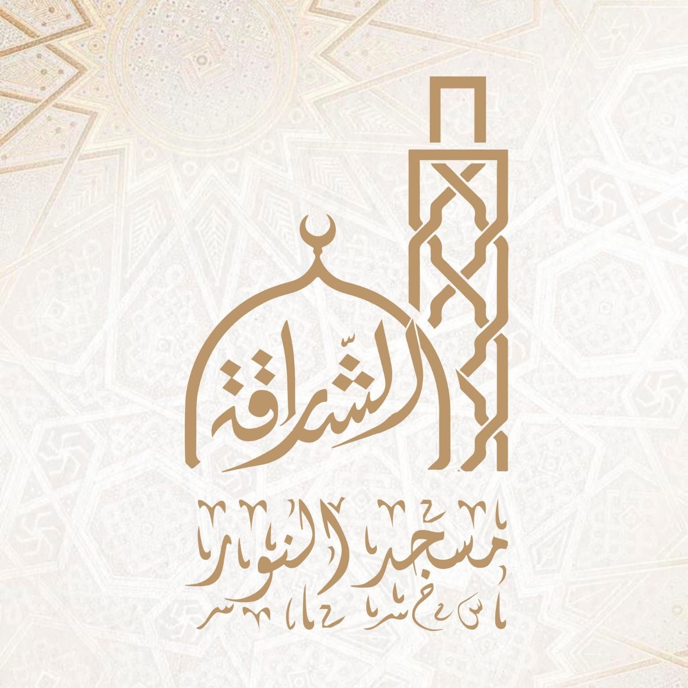

📍
الموقع والاتجاهات
افتح موقع المسجد على Google Maps وتعرّف على الطريق للوصول إليه.
عرض الاتجاهات ←منارة للعبادة والعلم وتعلّم القرآن الكريم في قلب الشراقة. اكتشفوا أنشطة المسجد، وتواصلوا مع المدرسة القرآنية، وتابعوا آخر الإعلانات عبر منصاتنا الرسمية.

بوابتكم للوصول السريع إلى المعلومات وروابط المسجد والمدرسة القرآنية.
افتح موقع المسجد على Google Maps وتعرّف على الطريق للوصول إليه.
عرض الاتجاهات ←قسم خاص بالمدرسة القرآنية، وروابطها الرسمية ووسائل التواصل معها.
التعرّف على المدرسة ←تابع إعلانات المسجد وأنشطته عبر صفحته الرسمية على Facebook.
الصفحة الرسمية ←فضاء للتواصل مع المدرسة القرآنية ومتابعة أخبارها ومحتواها المنشور عبر صفحاتها المخصصة. يمكن إضافة برامج الحفظ، أوقات الدراسة، وشروط التسجيل بعد تأكيدها من إدارة المدرسة.
الشراقة، بالقرب من مركز القدس، الجزائر العاصمة. استخدم الرابط الرسمي الذي زوّدتنا به إدارة الصفحة للحصول على الاتجاهات.
مسجد النور، الشراقة، الجزائر العاصمة. اضغط على الزر لفتح الموقع المحدد مباشرة في تطبيق Google Maps.
ابقوا على تواصل معنا
روابط التواصل التي زوّدتمونا بها، للوصول المباشر إلى صفحات المسجد والمدرسة القرآنية.